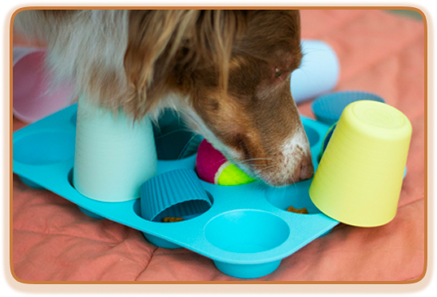

Nosework hjemme for begyndere
Aktivér din hund med næsen, hjemme i stuen
En enkel begynderguide til dig, der vil prøve roligt næsearbejde med din hund.
Start dit første søg
Hvad er nosework?
Nosework er en sjov aktivitet, hvor hunden bruger sin næse til at finde dufte eller godbidder.
Det skal du bruge
- Små godbidder
- Kopper eller små æsker
- Et roligt sted med få forstyrrelser
Prøv dit første søg
- Find godbidder og kopper eller æsker frem.
- Læg en godbid under en kop eller i en lille, åben æske.
- Lad din hund snuse og finde godbidden i sit eget tempo.
- Ros hunden, når den finder den, og stop mens legen stadig er sjov.
Gode råd til den første træning
Hold det kort, lad hunden lykkes, og giv den tid til selv at snuse sig frem.